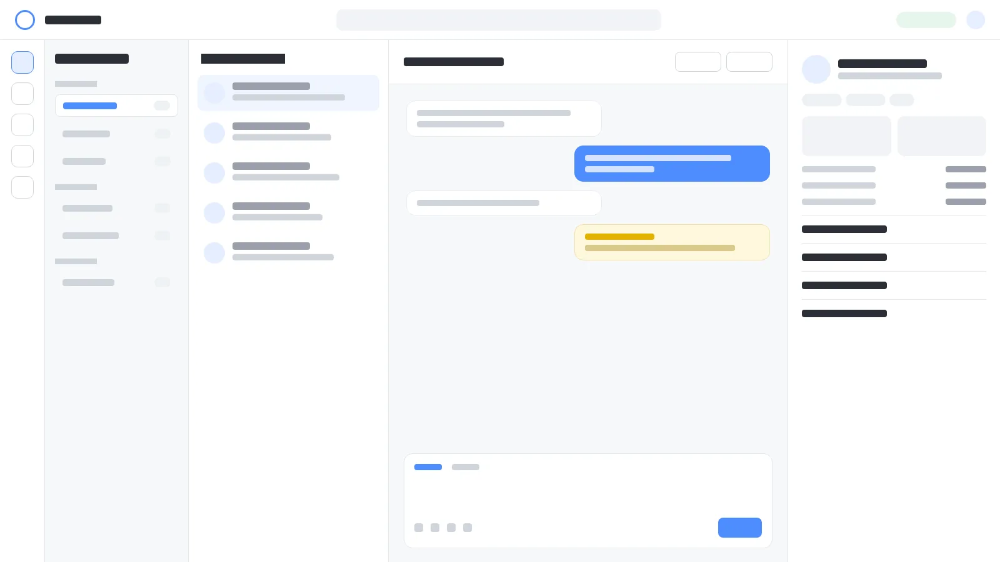

Everything was there. But the experience needed to evolve.
The existing Operator Console brought conversations, visitor details, navigation, and support tools into one interface. But as the product continued to grow, the workspace became increasingly dense.
The challenge wasn’t simply making the interface look more modern. It was rethinking how operators interact with the information they need throughout a conversation.
The existing experience was the starting point for a broader redesign of the operator workspace.
How do we make a complex workspace feel simpler?
Operators need to do more than respond to messages. They need to manage conversations, understand visitor context, access customer information, and navigate between different parts of the product—all without losing focus.
Conversation first
Keep the active conversation at the center of the experience.
Context when needed
Make visitor information and relevant details accessible without interrupting the conversation.
A workspace that scales
Organize navigation and tools in a way that accommodates the growing product.
From individual panels to a connected workspace.
Rather than treating navigation, conversations, and visitor information as separate areas competing for attention, the redesign approached them as parts of one operator workspace.
The goal was to create a more deliberate hierarchy—where each area had a clear role, while operators could move between them naturally.
A clearer structure. A more focused conversation.
The redesigned console brings the operator’s core workflow into a more structured interface.
- 01Navigation
A more compact navigation system creates space for the operator’s primary work while keeping essential destinations accessible.
- 02Conversation workspace
The conversation remains the primary focus, with a cleaner hierarchy for messages, actions, and interaction controls.
- 03Visitor context
Visitor information is organized in a dedicated contextual area, so operators can access relevant details alongside the conversation.
- 04Workspace organization
The overall interface is structured to reduce visual competition between areas and make the workspace easier to scan.
Less visual noise. More clarity.
The redesign focused on improving how information is organized and how the operator’s attention moves across the interface.


Three principles shaped the redesign.
Keep the conversation at the center
The operator’s primary task is managing conversations. The interface should support that task without allowing surrounding information and tools to overpower it.
Context should be accessible, not distracting
Visitor details are valuable during conversations, but they shouldn’t constantly compete with the messages themselves. Organizing contextual information separately creates a clearer relationship between conversation and customer data.
Optimize the workspace, not just individual screens
The redesign needed to work as an integrated system. Navigation, conversation, visitor information, and actions should feel like parts of one coherent workspace rather than isolated interface components.
Designed around the operator’s workflow.
The redesigned console brings the essential parts of the operator experience together in a more structured layout.
To the visitor
Formatted messages, attachments, emoji and voice.
To your team
Private notes that stay inside the conversation.
Canned replies
Type “/” and pick a saved answer.
Operators can focus on their active conversation while maintaining access to the navigation, visitor context, and supporting tools required to manage the interaction.
A more focused foundation for customer conversations.
The redesign established a cleaner, more structured Operator Console experience: greater clarity in the workspace, better organized information, and a more cohesive interface for managing conversations and accessing visitor context.
- ClarityA clearer workspace
A more deliberate hierarchy across navigation, conversation, and visitor information.
- FocusA conversation-first experience
The active conversation remains central to the operator’s workflow.
- ContextBetter organized context
Visitor information is presented alongside the conversation in a dedicated area.
- FoundationA foundation for evolution
A more cohesive interface that can continue evolving as the product and operator workflows grow.
A workspace is more than the sum of its panels.
Redesigning a complex product isn’t about simplifying everything or removing information. It’s about understanding what deserves attention, when it matters, and how different parts of the experience work together.
The most meaningful improvements often come from getting the structure right.